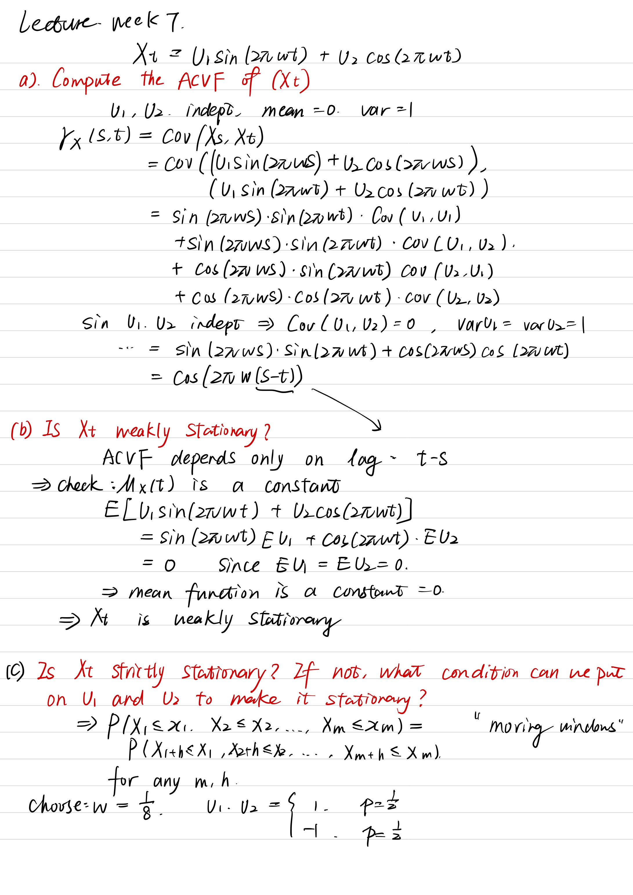
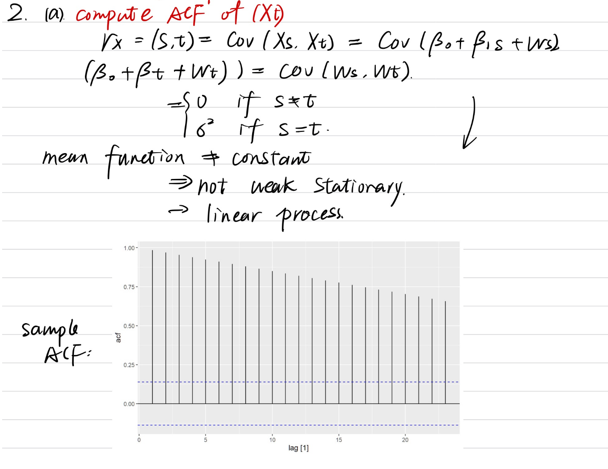
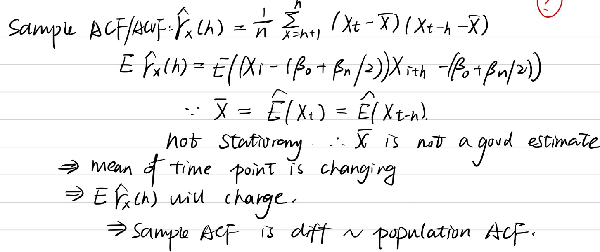
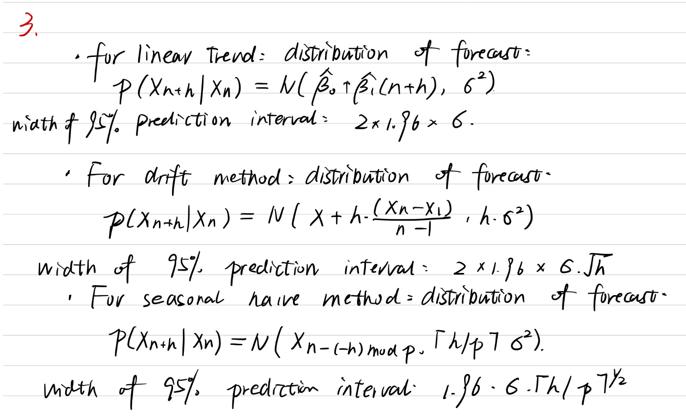
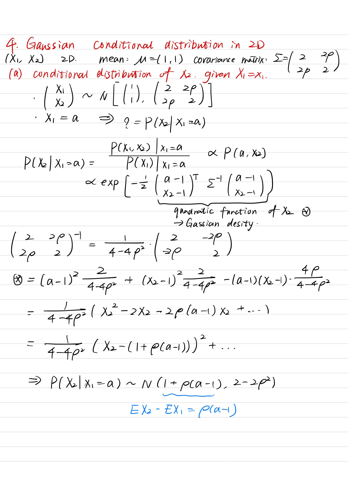

library(fpp3)
library(tidyverse)
library(slider)
library(gridExtra)Week 5 Demonstration
Set up
PRErecorded video:
Statistical Modeling of Time Series
set.seed(42)
rw_ts <- tibble(
j = 1:200,
wn = rnorm(200),
rw0 = cumsum(wn),
rw1 = rw0 + 0.2 * (j - 1)
) |> as_tsibble(index = j)
rw_ts |>
pivot_longer(cols = c("rw0", "rw1"),
values_to = "value",
names_to = "drift") |>
autoplot(value) +
geom_segment(aes(x = 0, y = 0, xend = 200, yend = 199 * 0.2),
linetype = "dashed", color = "blue") +
geom_segment(aes(x = 0, y = 0, xend = 200, yend = 0),
linetype = "dashed", color = "black") +
scale_color_discrete(labels = c("0", "0.2"), type = c("black", "blue"))Warning in geom_segment(aes(x = 0, y = 0, xend = 200, yend = 199 * 0.2), : All aesthetics have length 1, but the data has 400 rows.
ℹ Please consider using `annotate()` or provide this layer with data containing
a single row.Warning in geom_segment(aes(x = 0, y = 0, xend = 200, yend = 0), linetype = "dashed", : All aesthetics have length 1, but the data has 400 rows.
ℹ Please consider using `annotate()` or provide this layer with data containing
a single row.
1. ACVF, ACF, and stationarity
Consider the time series defined as \[ X_t = U_1 \sin(2\pi \omega t) + U_2\cos(2\pi\omega t), \] where \(U_1\) and \(U_2\) are independent random variables with zero mean and variance 1.
- Compute the ACVF of \((X_t)\).
- Is \((X_t)\) weakly stationary?
- Is \((X_t)\) strictly stationary? If not, what conditions can we put on \(U_1\) and \(U_2\) to make it stationary?
\[ \begin{split} \gamma_X(s, t) & = \text{Cov}\lbrace X_t,X_s\rbrace \\ & = \text{Cov}\lbrace U_1 \sin(2\pi \omega s) + U_2\cos(2\pi\omega s), U_1 \sin(2\pi \omega t) + U_2\cos(2\pi\omega t)\rbrace \\ & = \sin(2\pi \omega s)\sin(2\pi\omega t)\text{Cov}\lbrace U_1, U_1 \rbrace + \sin(2\pi\omega s)\cos(2\pi\omega t)\text{Cov}\lbrace U_1, U_2 \rbrace \\ & \quad\quad + \cos(2\pi\omega s)\sin(2\pi\omega t)\text{Cov}\lbrace U_2, U_1 \rbrace + \cos(2\pi\omega s)\cos(2\pi\omega t)\text{Cov}\lbrace U_2, U_2 \rbrace \\ & = \sin(2\pi\omega s)\sin(2\pi\omega t) + \cos(2\pi\omega s)\cos(2\pi\omega t) \\ & = \cos(2\pi\omega(t-s)) \end{split} \]
Here, the last equality uses a triogonometric identity. Alternatively, can think of this as the dot product between two unit vectors.
Observe that \(\gamma_X(s, t)\) depends only on the difference \(t-s\). We further have \[ \mu_X(t) = \mathbb{E}\lbrace U_1 \sin(2\pi \omega t) + U_2\cos(2\pi\omega t) \rbrace = 0, \] which does not depend on \(t\). As such, \((X_t)\) is weakly stationary.
On the other hand, depending on the choice of \(U_1, U_2\), it may not be strongly stationary. For instance, let \(U_1\) and \(U_2\) have the distribution given by \[ \mathbb{P}\lbrace U = 1\rbrace = \mathbb{P}\lbrace U = -1 \rbrace = 1/2. \] This is known as the Rademacher distribution. Suppose also that \(\omega = 1/8\). We then have \[ X_2 = U_1\sin(\pi/4) + U_2\cos(\pi/4) = U_1. \] On the other hand, \[ X_1 = U_1\sin(\pi/4) + U_2\cos(\pi/4) = U_1/\sqrt{2} + U_2/\sqrt{2}. \] As such, we have \[ \mathbb{P}\lbrace X_1 = \sqrt{2}\rbrace = \mathbb{P}\lbrace X_1 = -\sqrt{2}\rbrace = 1/4 \] \[ \mathbb{P}\lbrace X_1 = 0\rbrace = 1/2 \]
If \(U_1, U_2 \sim N(0,1)\), then the process is strictly stationary, since it is a Gaussian process, in which case, all finite dimensional distributions depend only on the mean and AVCF values.

2. ACF vs sample ACF
Consider the linear trend model \[ X_t = \beta_0 + \beta_1 t + W_t. \]
Compute the ACF of \((X_t)\).
The ACF is \[ \gamma_X(s, t) = \text{Cov}\lbrace X_t,X_s\rbrace = \text{Cov}\lbrace W_t,W_s\rbrace = \begin{cases} 1 & \text{if}~s = t \\ 0 & \text{otherwise}. \end{cases} \]
This hence depends only on the difference \(s-t\).
Simulate a time series drawn from this model and plot its sample ACF.
beta0 <- 3 beta1 <- 0.4 # Sample data ts_data <- tibble( idx = 1:200, wn = rnorm(200), xt = beta0 + beta1 * idx + wn ) |> as_tsibble(index = idx) # Plot the ACF ts_data |> ACF(xt) |> autoplot()
Why does the sample ACF not look like the population ACF function?
The sample ACF is calculated as \[ \hat\gamma_X(h) = \frac{1}{n}\sum_{i=1}^{n-h}(X_i - \bar X) (X_{i+h} - \bar X). \] The expectation of each term is roughly \[ \mathbb{E}\lbrace(X_i - (\beta_0 + \beta n/2))X_{i+h} - (\beta_0 + \beta n/2))\rbrace. \] This is not the covariance between them because \(\beta_0 + \beta n /2\) is not their means unless \(i = n/2\) or \(i+h = n/2\).
Why does the asymptotic normality theorem for the ACF not apply?
The asymptotic normality theorem does not apply because it requires the time series to be stationary. Since the mean function \(\beta_0 + \beta_1 t\) depends on \(t\), \((X_t)\) is not stationary.


3. Prediction interval widths
Consider the linear trend method, the drift method, and the seasonal naive method.
What is the formula for the width of their prediction intervals as a function of the forecast horizon \(h\)?
For linear trend, the distributional forecast is \(\hat x_{n+h|n} \sim N( \hat \beta_0 + \hat \beta_1 (n+h), \sigma^2)\). Hence the width of a level 0.95 prediction interval is \(1.96\sigma\).
For the drift method, the distributional forecast is \(\hat x_{n+h|n} \sim N( x_n, h\sigma^2)\). Hence the width of a level 0.95 prediction interval is \(1.96\sigma\cdot h^{1/2}\).
The seasonal naive method distributional forecast is \(\hat x_{n+h|n} \sim N( x_{n-(-h)~\text{mod}~p}, \lceil h/p \rceil\sigma^2)\). Hence, the width of a level 0.95 prediction interval is \(1.96\sigma\cdot \lceil h/p \rceil^{1/2}\).
Use the first methods to forecast China’s GDP in
global_economyand verify this is the case. For seasonal naive, forecast arrivals from Japan inaus_arrivals.china_gdp <- global_economy |> filter(Country == "China") |> model(linear = TSLM(GDP ~ trend()), drift = NAIVE(GDP ~ drift())) |> forecast(h = 50) plt1 <- china_gdp |> filter(.model == "linear") |> autoplot(global_economy) plt2 <- china_gdp |> filter(.model == "drift") |> autoplot(global_economy) plt3 <- aus_arrivals |> filter(Origin == "Japan") |> model(snaive = SNAIVE(Arrivals)) |> forecast(h = 50) |> autoplot(aus_arrivals) grid.arrange(plt1, plt2, plt3)

4. Gaussian conditional distribution in 2D
Let \((X_1,X_2)\) be a 2D Gaussian random vector with mean \(\mu = (1, 1)\) and covariance matrix
\[ \Sigma = \begin{bmatrix} 2 & 2\rho \\ 2\rho & 2\end{bmatrix} \]
a. From first principles, derive the conditional distribution of \(X_2\) given \(X_1=x_1\).
b. How does the distribution change as \(\rho\) changes? How about as \(x_1\) changes?

c. Make a scatter plot of the joint distribution of \((X_1,X_2)\) for \(\rho = 0.1\) and for \(\rho = 0.9\) . Does this agree with your answer from (b) and (c)?
#rho <- 0.9
rho <- 0.9
x_df <-
tibble(x = rnorm(200),
y = rho * x + sqrt(1 - rho ** 2) * rnorm(200))
library(ggplot2)
#X∼N(0,1)
#Y is a linear transformation of X plus some noise, ensuring that X and Y have the desired correlation rho=0.9.
ggplot(x_df, aes(x = x, y = y)) +
geom_point(alpha = 0.6) +
ggtitle("Scatter Plot of Correlated Variables (ρ = 0.9)") +
theme_minimal()
Meaning : fix a value of x(eg. x = 2) , the slice of x = 2 -> conditional distribution of X2, give X1 = 2.
mean of conditional distribution depends linearly on the value of X1
variance of the distribution is not depends on the value of X1. but it depends on the correlation between X1, X2.
#rho <- 0.1
rho <- 0.1
x_df <-
tibble(x = rnorm(200),
y = rho * x + sqrt(1 - rho ** 2) * rnorm(200))
library(ggplot2)
#X∼N(0,1)
#Y is a linear transformation of X plus some noise, ensuring that X and Y have the desired correlation rho=0.9.
ggplot(x_df, aes(x = x, y = y)) +
geom_point(alpha = 0.6) +
ggtitle("Scatter Plot of Correlated Variables (ρ = 0.1)") +
theme_minimal()
Less predicable of another variable.